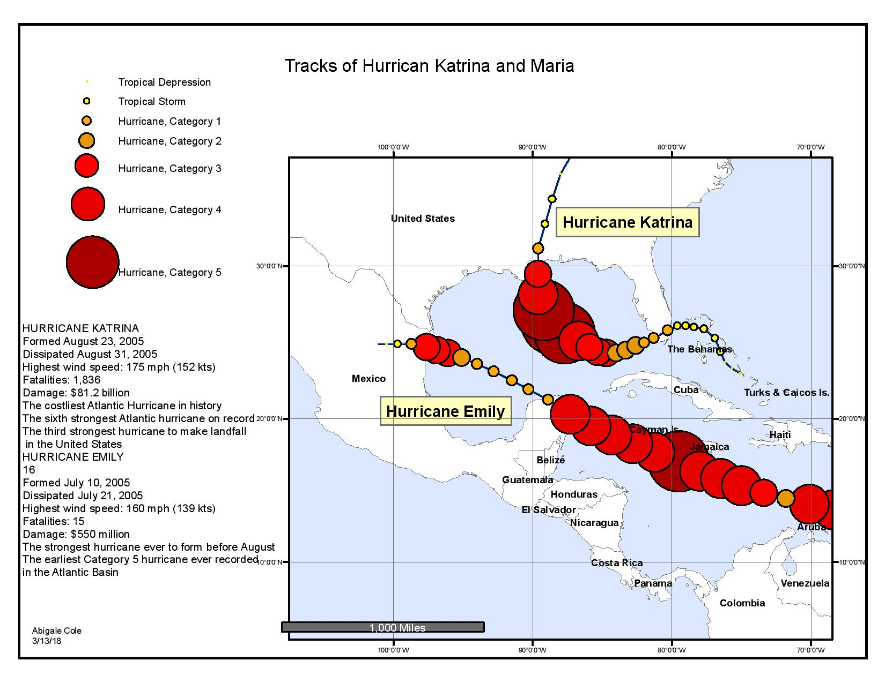
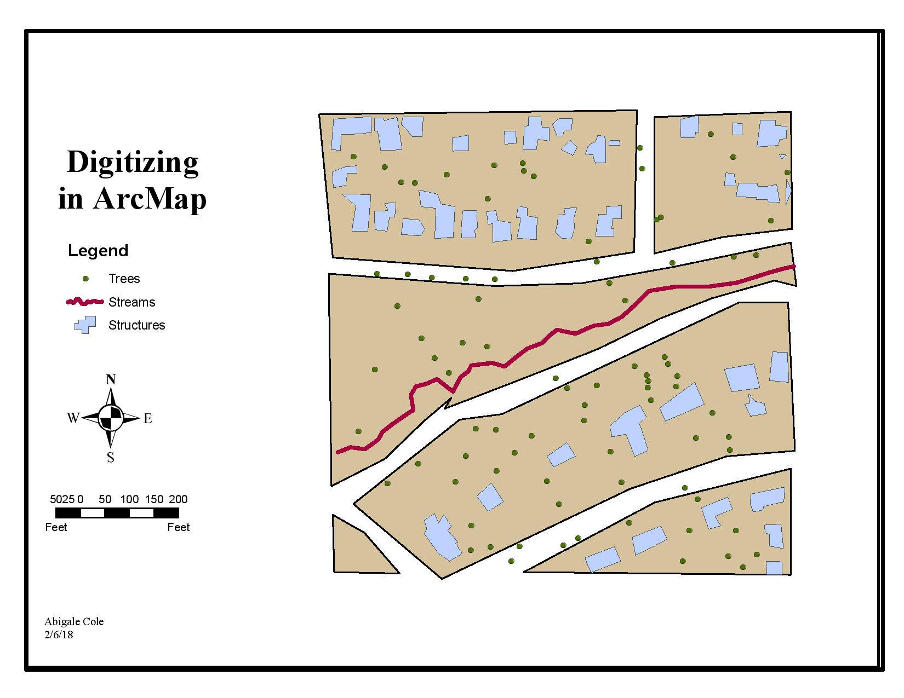
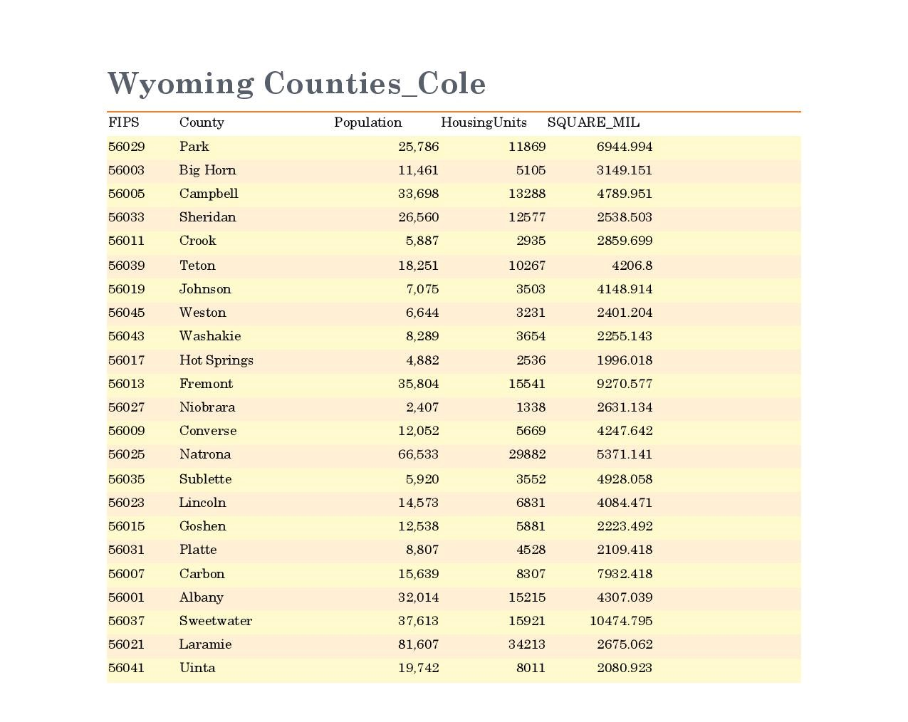
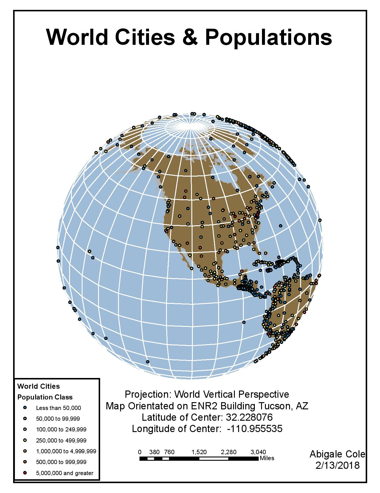
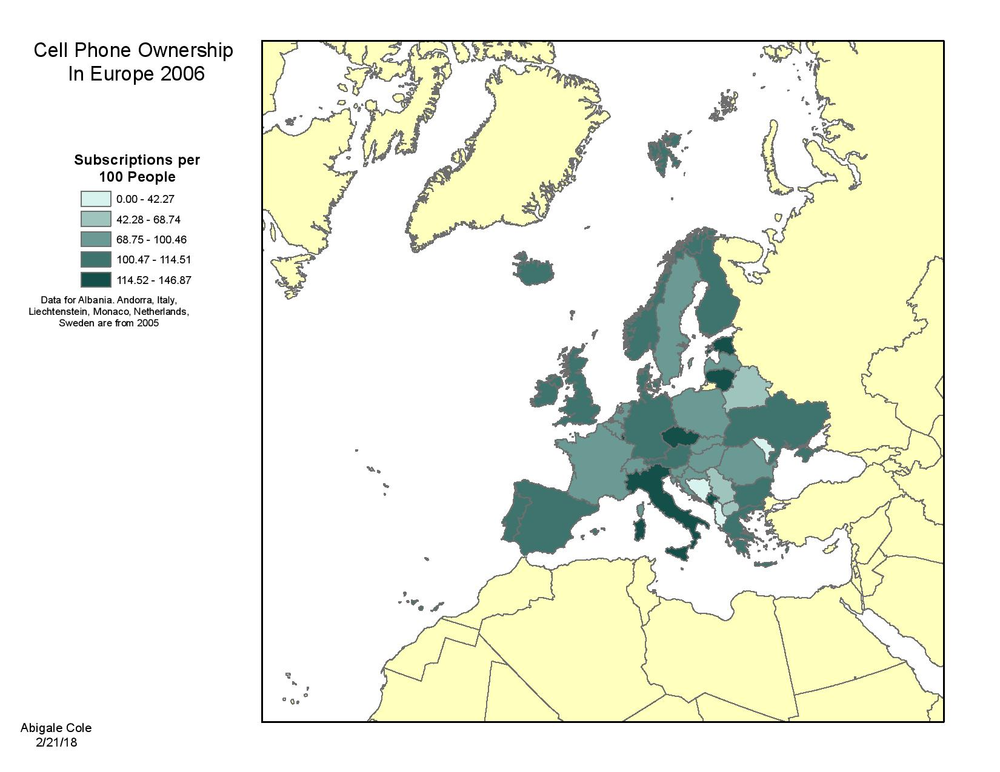
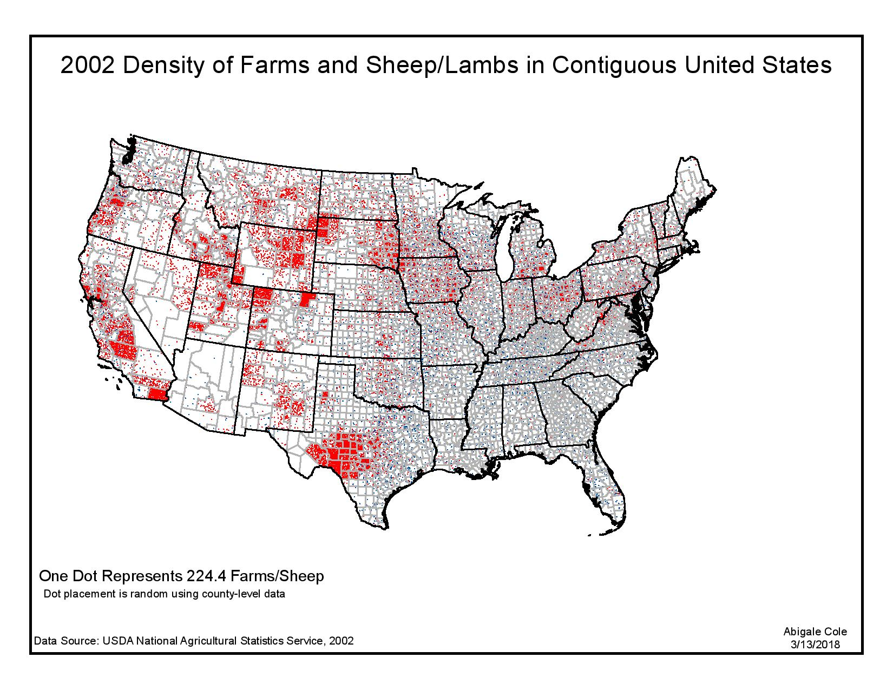
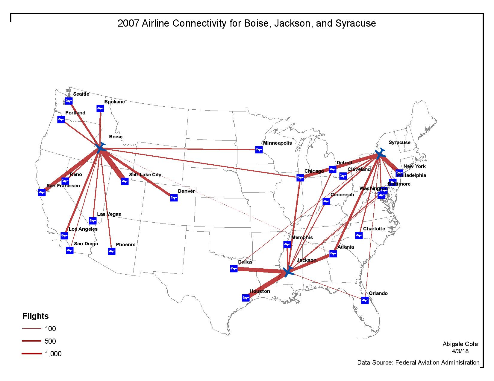

The Basics
Examples of maps I have created that embody the fundamentals of cartography
The below maps have been created using ArcMap unless otherwise noted
Graduated and Proportional Symbol Mapping
The proportional symbol map is a widely-used form of thematic mapping. In this technique, the cartographer selects a symbol and alters its size, the area to be exact, based on the data values. There are three methods for setting symbol size: absolute scaling, apparent magnitude (perceptual) scaling, and range grading.
Basemaps and Digitizing
GIS map layers come in many forms and are available from a wide range of sources including public agencies and private firms. Even though a large amount of spatial data currently exists, it is common in mapping for a cartographer to create “from scratch” base maps to be used in mapping and GIS analysis. Digitizing data involves tracing over pre-existing maps or photographs using a digitizing tablet (for hard-copy maps and photos) or onscreen (for digital maps and photos).
Data Entry and Reporting
Attribute tables are organized in rows and columns contain all necessary data for ArcMap. In ArcMap, the rows are referred to as records while the columns are referred to as fields. Records are geographical features. Fields are used to describe a particular characteristic of that feature.
Projections and Symbolization
There are four families of map projections—azimuthal (planar), cylindrical, conic, and mathematical—and there are several individual projections belonging to each family.Projection aspect refers to the ―point of view of the projection. A projection’s normal aspect is the aspect that produces the simplest geometry for the graticule. For example, a graticule made up of straight lines of latitude and longitude intersecting at right angles is geometrically simpler than a graticule made up of complex curves. There are four aspects a projection may have: Polar, Equatorial, Oblique, and Transverse.
Choropleth Mapping
One of the most widely used thematic maps is the choropleth map. In this technique, symbols represent areas for which data has been collected. Thus, the technique is sometimes called enumeration mapping. Typical enumeration areas used for this technique include administrative areas such as countries, states, provinces, counties, and census tracts.
Dot Density Mapping
The dot density map is a very popular form of thematic mapping. The technique is simple and straightforward: a dot is used to represent a specific number of items, and the symbol is repeated until the total number of items in an area is accounted for. The strength of this technique is that it allows the reader to visually infer density without using derived tabulated data.
Flow Mapping
The flow map shows linear movement between places. As such, they are popular maps to represent migrations, commodity flows, and traffic patterns. Flow maps may be used to show both qualitative data (e.g., connections) or quantitative data (e.g., magnitudes). In qualitative flow mapping, the symbols are of uniform width and typically are arrows. In quantitative flow mapping, the cartographer selects a line symbol and alters its width based on the data values.